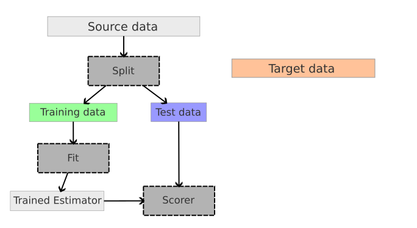

Users Guide
The core concept introduced with this API are the following:
sample_domainlabelsDomainAwareDatasetAPIAdapterinterfacePipeline,
make_da_pipelineand selectorsModel selection (model scoring, splitters)
The are a few test suites available to see examples, specifically
tests/test_mapping.pytests/test_reweight.pytests/test_subspace.pytests/test_pipeline.pytests/test_scorer.pytests/test_cv.pydatasets/tests/test_samples_generator.pydatasets/tests/test_office.py
To run all tests, simply execute
pytest skada/ --ignore=skada/deep
A test suite for new datasets API is on its way. A separate test suite for new Office31 dataset is already in there (note, it take a bit longer to run compared to other tests as it has to fetch datasets first).
Sample Domain
Typically, in supervised learning we deal with samples (X) and labels (y). Like that:
model = LogisticRegression()
model.fit(X_train, y_train)
model.score(X_test, y_test)
With domain adaptation it's a bit more complicated as we have multiple (X, y) pairs originating from different domains. A core theme of the new API is an explicit labeling of domains per each sample: all methods (like fit, predict, score, adapt and others) takes additional argument sample_domain. Each domain is assigned with an integer label. When passing into processing, source domains are marked with positive labels and target as negatives. A bunch of helpers are available to make work with domain labeling simple and straightforward. Common use case looks like
model = DomainAwareEstimator(CORALAdapter(), LogisticRegression())
model.fit(X_train, y_train, sample_domain=sample_domain_train)
model.score(X_test, y_test, sample_domain=sample_domain_test)
sample_domain could be skipped if a) there's a single source and single target domain, b) target labels are masked with the special value -1. In such a case, sample_domain would be automatically derived. In other scenarios, sample_domain is required.
Dataset
New skada.datasets.DomainAwareDataset class to act as a container for all domains with the API built around add_domain and pack methods:
datasets = DomainAwareDataset()
datasets.add_domain(X_subj1, y_subj1, domain_name="subj_1")
datasets.add_domain(X_subj3, y_subj3, domain_name="subj_3")
datasets.add_domain(X_subj12, y_subj12, domain_name="subj_12")
X, y, sample_domain = datasets.pack(as_sources=['subj_12', 'subj_1'], as_targets=['subj_3'])
should be also compatible for fetchers, like
office31 = fetch_office31_surf_all()
X, y, sample_domain = office31.pack(as_sources=['amazon', 'dslr'], as_targets=['webcam'])
Method pack also accepts optional return_X_y argument (defaults to True). When this argument is set to False, the method returns Bunch object with the following set of keys:
>>> office31 = fetch_all_office31_surf()
>>> data = office31.pack(as_sources=['amazon', 'dslr'], as_targets=['webcam'], return_X_y=False)
>>> data.keys()
dict_keys(['X', 'y', 'sample_domain', 'domain_names'])
This is mostly to cover use cases where you need access to 'domain_names' labels. Domain labels are assigned following the convention that source gets non-negative integer (1,2,..) and target always gets negative (-1,-2,...). Labels are assigned in the order that datasets are provided, should make it easier to "reconstruct" labels even working with tuple output (without access to Bunch object). Absolute value of the label is always static for a given domain name, for example if "amazon" domain gets index 2 it will be included in sample_domain as 2 when included as source and -2 when included as target. Such convention is required to avoid fluctuations of domain labels (otherwise multi-estimator API won't be possible).
Considering different scenarios, the dataset provides the following helpers:
pack_trainmasks labels for domains designated for being used as targetspack_testpacks requested targets
Working with an estimator with a new API would look like the following:
office31 = fetch_office31_surf_all()
X_train, y_train, sample_domain = office31.pack_train(as_sources=['amazon', 'dslr'], as_targets=['webcam'])
estimator = make_da_pipeline(CORALAdapter(),LogisticRegression())
estimator.fit(X_train, y_train, sample_domain=sample_domain)
# predict and score on target domain
X_test, y_test, sample_domain = office31.pack_test(as_targets=['webcam'])
webcam_idx = office31.select_domain(sample_domain, 'webcam')
y_target = estimator.predict(X_test,[webcam_idx], sample_domain=sample_domain[webcam_idx])
score = estimator.score(X_test[webcam_idx], y=y_test[webcam_idx], sample_domain=sample_domain[webcam_idx])
# pick multiple domains
source_idx = office31.select_domain(sample_domain, ('amazon', 'dslr'))
# or using markers from `DomainAware*` API (see description below)
target_idx = office31.select_domain(sample_domain, DomainAwareEstimator.INCLUDE_ALL_TARGETS)
# generic helper to simplify flow when the dataset is created "on the fly"
from skada.datasets import select_domain
source_idx = select_domain(office31.domain_names, sample_domain, ('amazon', 'dslr'))
Adapters and Estimators
Adapter
The next building block for domain adaptation API is "Adapter" (see skada.base.BaseAdapter for details). The job of the adapter is to transform source and target samples (and, possibly, labels or weights) into the output space where estimator is going to be defined. "Adapter" is defined by providing fit and adapt methods (the closest analogy for adapters is sklearn transformers, typical workflow is also similar).
The list of adapters that were moved to a new API:
ClassRegularizerOTMappingAdapterCORALAdapterEntropicOTMappingAdapterLinearOTMappingAdapterOTMappingAdapterDiscriminatorReweightAdapterGaussianReweightAdapterKLIEPReweightAdapterDensityReweightAdapterSubspaceAlignmentAdapterTransferComponentAnalysisAdapter
Pipeline
You can create a domain aware estimator as the pipeline that combines together adapter of your choice (to perform transformation) and the estimator (well, as an estimator):
from skada import make_da_pipeline
estimator = make_da_pipeline(
CORALAdapter(),
LogisticRegression()
)
estimator.fit(X_train, y_train, sample_domain=sample_domain)
The helper function make_da_pipeline creates a built-in sklearn.pipeline.Pipeline meta-estimator, which exposes all estimator-related calls (like fit and predict), it also defines additional methods based on the functionality provided in the base estimator (like predict_proba or score). It also has a special method adapt to perform transformation without passing it into estimator.
Feel free to stack more transformers as necessary:
estimator = make_da_pipeline(
StandardScaler(),
PCA(),
CORALAdapter(),
LogisticRegression()
)
estimator.fit(X_train, y_train, sample_domain=sample_domain)
Selector
Shared is a simplest select that always returns the same entity (note that BaseAdapter is also sklearn estimator for additional conveniences). Also note, that a single adapter and/or estimator would still work on multiple domains by concatenating them. Other selectors available:
PerDomainSelector(single base adapter/estimator, cloned and fitted per each domain)SourceTargetSelector(one adapter/estimator for all sources, one for all targets)
Even though, as of now, we don't have any adapters that would be reasonable to split per domain, - when they are ready, the usage would look as follows:
estimator = make_da_pipeline(
OTMappingAdapter(),
PerDomain(LogisticRegression())
)
estimator.fit(X_train, y_train, sample_domain)
If you have the scenario that fits neither, low-level API is available at your convenience (see the section below).
Test-time Domain Adaptation
When working with multiple domains, predict only respects domains that were seen during the fitting. For doing test-time domain adaptation (when new adapter or estimator is fit at a test time) update and update_predict methods are available. Those work the same way as fit and fit_predict with the only difference that they take in new domains (previously unseen).
Model Selection
The implementation is largely compatible with scikit-learn's model selection tools, such as cross_validate and GridSearchCV. When using these tools, the sample_domain should be included in the params dictionary passed to the respective method. For practical usage examples, refer to the tests in skada/tests/test_cv.py, which showcase how to integrate these splitters with scikit-learn's model selection framework effectively.
Scoring
The library ships a few scorers for domain adaptation models. The following scorers are plug-and-play compatible:
ImportanceWeightedScorerPredictionEntropyScorerSoftNeighborhoodDensity
See API usage examples in skada/tests/test_scorer.py.
The SupervisedScorer is a unique scorer that necessitates special consideration. Since it requires access to target labels, which are masked during the dataset packing process for training, this scorer mandates an additional key to be passed within the params. The usage is as follows:
X, y, sample_domain = da_dataset.pack_train(as_sources=['s'], as_targets=['t'])
estimator = make_da_pipeline(
DensityReweightAdapter(),
LogisticRegression().set_score_request(sample_weight=True),
)
cv = ShuffleSplit(n_splits=3, test_size=0.3, random_state=0)
_, target_labels, _ = da_dataset.pack(as_sources=['s'], as_targets=['t'], train=False)
scoring = SupervisedScorer()
scores = cross_validate(
estimator,
X,
y,
cv=cv,
params={'sample_domain': sample_domain, 'target_labels': target_labels},
scoring=scoring,
)
The code fails if the validation uses SupervisedScorer but target_labels are not provided.
Splitters
The library includes a range of splitters designed specifically for domain adaptation scenarios.
skada.model_selection.SourceTargetShuffleSplit: This splitter functions similarly to the standard ShuffleSplit but takes into account the distinct separation between source and target domains. It follows the standard API structure:
X, y, sample_domain = da_dataset.pack_train(as_sources=['s', 's2'], as_targets=['t', 't2'])
pipe = make_da_pipeline(
SubspaceAlignmentAdapter(n_components=2),
LogisticRegression(),
)
n_splits = 4
cv = SourceTargetShuffleSplit(n_splits=n_splits, test_size=0.3, random_state=0)
scores = cross_validate(
pipe,
X,
y,
cv=cv,
params={'sample_domain': sample_domain},
scoring=PredictionEntropyScorer(),
)
skada.model_selection.LeaveOneDomainOut is a cross-validator that, in each iteration, randomly selects a single domain to serve as the target. After this selection, the train/test split is performed using the ShuffleSplit algorithm. The max_n_splits parameter limits the number of splits; in its absence, each domain is used as a target exactly once.
This splitter requires the dataset to be specially prepared so that each domain is represented as both a source and a target simultaneously. This preparation can be achieved using the pack_lodo method. An example is provided below for clarity:
X, y, sample_domain = da_dataset.pack_lodo()
pipe = make_da_pipeline(
SubspaceAlignmentAdapter(n_components=2),
LogisticRegression(),
)
cv = LeaveOneDomainOut(max_n_splits=max_n_splits, test_size=0.3, random_state=0)
scores = cross_validate(
pipe,
X,
y,
cv=cv,
params={'sample_domain': sample_domain},
scoring=PredictionEntropyScorer(),
)
More examples demonstrating the usage of splitters and scorers can be found in
the skada/tests/test_cv.py test suite.
Metrics for DA
To evaluate an estimator or to select the best parameters for it, it is necessary to define a score. In sklearn, several functions and objects can make use of the scoring API like cross_val_score or GridSearchCV. To avoid overfitting, these methods split the initial data into training set and test set. The training set is used to fit the estimator and the test set is used to compute the score.
In domain adaptation (DA) problems, source data and target data have a shift in their distributions.
Let's load a DA dataset:
>>> from skada.datasets import make_shifted_datasets
>>> from skada import EntropicOTmapping
>>> from skada.metrics import TargetAccuracyScorer
>>> RANDOM_SEED = 0
>>> X, y, X_target, y_target = make_shifted_datasets(
... n_samples_source=30,
... n_samples_target=20,
... shift="covariate_shift",
... label="binary",
... noise=0.4,
... random_state=RANDOM_SEED,
... )
Now let's define a DA estimator to evaluate on this data:
>>> from skada import DensityReweight
>>> from sklearn.linear_model import LogisticRegression
>>> base_estimator = LogisticRegression()
>>> estimator = DensityReweight(base_estimator=base_estimator)
Having a distribution shift between the two domains means that if the validation is done on samples from source like shown in the images below, there is high chance that the score does not reflect the score on target because the distributions are different.
{width="400px" height="240px"}
To evaluate the estimator on the source data, one can use:
>>> from sklearn.model_selection import cross_val_score
>>> from sklearn.model_selection import ShuffleSplit
>>> cv = ShuffleSplit(n_splits=5, test_size=0.3, random_state=0)
>>> cross_val_score(
... estimator,
... X,
... y,
... cv=cv,
... fit_params={'X_target': X_target},
... scoring=None,
... )
array([0.72222222, 0.83333333, 0.81944444])
skada offers a way to do the evaluation on the target data, while reusing the scikit-learn methods and scoring API.
Different methods are available, to start we will use skada.metrics.SupervisedScorer that computes the score on the target domain:
>>> from skada.metrics import SupervisedScorer
>>> cv = ShuffleSplit(n_splits=5, test_size=0.3, random_state=0)
>>> cross_val_score(
... estimator,
... X,
... y,
... cv=cv,
... fit_params={'X_target': X_target},
... scoring=SupervisedScorer(X_target, y_target),
... )
array([0.975 , 0.95625, 0.95625])